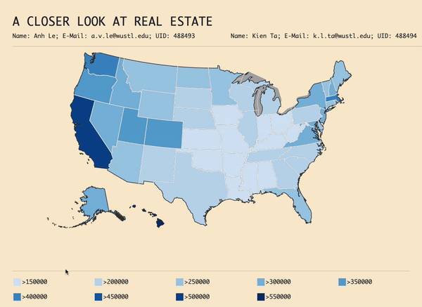

- Our project aims to provide a deeper understanding of the US real estate market nowadays. We want a website that provides interactive comparison between states and preferably counties in the United States. Website like like zillow.com or realtor.com only offers listings for a specific area based on user's query search. What if a user has no to little understanding of the real estate market and wants to start exploring, learning about the market and wants to get an overview of the housing prices in the United States.
- The main displayed map will contains information about the average housing prices of each state for easier comparison. Upon hovering over a state, user will see the state name as well as the median housing price at the current year. Clicking in a state will zoom in to display counties and some recommended listing on the right panels.
- We have been reading a lot of news articles on why we should get into real estate investment to make another source of income.
Here is one of the articles discussing the benefits of real esate.
- We want to dive deeper into understanding the real market in the US.
- Geomapping from Studio 7 in class inspired us to draw the United States map using topojson data.
- Why does 2 houses with same number of beds, same number of baths, relatively same square footage but in 2 different locations would have completely
different prices? Could it be because of just location or are there other factors contributing to the final sale price of the properties?
- We want to put into consideration factors like properties' car dependencies, locations' crime rates, minimum wages other than simply just exterior
and interior details.
- After choosing a state, some sample listings will show up for users to start exploring around. We will also implement a functionality to enter zip
code, state's name or even a specific address to display housing prices using the given search query.
- We will use the provided csv data from Zillow Research ("state_median_price.csv").
We will use Zillow Home Value Index (ZHVI) to create the homepage's heatmap.
- The main data come from ATTOM API ("data.json"):
(Endpoint: GET /sale/detail).
- To obtain counties' crime rate, we will use the United States crime rates by county dataset from
Kaggle
("crime_data_w_population_and_crime_rate.csv").
- To obtain minimum wage per state, we will also use the US Minimum Wage by State from 1968 to 2020 data set from
Kaggle("Minimum-Wage-Data.csv").
- To obtain car dependency, walking score, we will use Walk Score API
(has not been approved for a free tier account yet).
- Topojson data to draw US map including states and counties as well: ("us-10m.json")
- We used basic plot (scatter plot and bar chart) to visualize the correlation of features like house size, age vs house price to get an insight of how the data looks like. It seems to me that the bigger the size, the more expensive the house is (given the similar location). Similarly, the lower the age, the more expensive the house is.
- We are still implementing a map displaying the average housing price of all the states in America. The main map looks pretty similar to what we originally wanted.


We have finished creating an interactive map for user's to hover over the map to get average housing price in the United States. Moverover, clicking onto a
selected state will zoom in and in order to zoom out, user would simply need to click the state again. Here is a quick demo:

- We realized that houses in California are actually not the most expensive anymore because properties in Hawaii have taken the top spot. This is actually a
surprising point to both of us.
- The map can definitely be improved. We want to compare housing median prices using counties as well but we have not found a dataset for it so for now, the color
is still grayed out. If found a dataset, we will color coded the counties based on average housing prices as well for even deeper comparison within user's selected state.